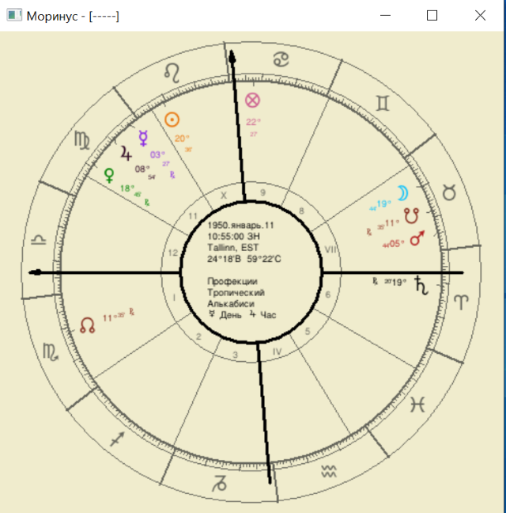
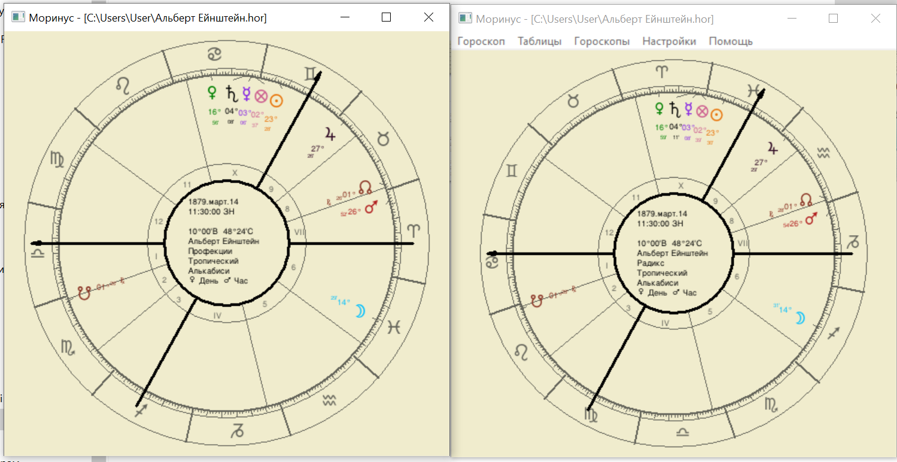
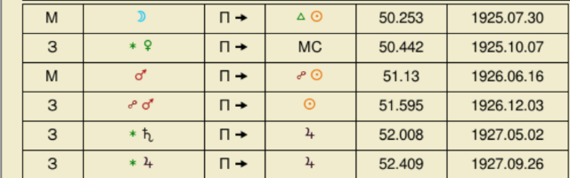
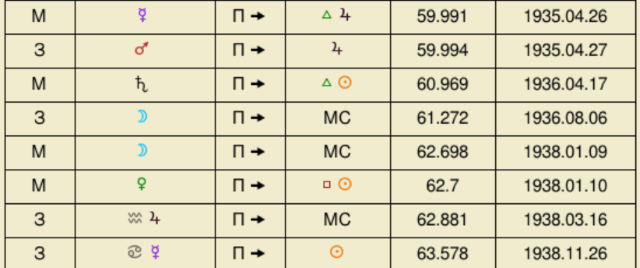

Управителі домів в профекціях
Якщо дім займають два знаки, і частка другого знака в домі досить
велика, то дім має два управителя.
Лілі: Как если начало знака восходит, тогда одна планета может быть
Dominus Anni или владыкой того года; но если середина знака восходит,
тогда будет два владыки, а именно, планета, которая управляет первыми
пятнадцатью восходящими градусами, и та, которая управляет следующими
пятнадцатью градусами.
Приклад

Управителі року в профекції -Венера (управитель Терезів) і Марс
(Управитель Скорпіона). Управителі МС - Місяць(управитель Раку) і
Сонце(управитель Лева).Так само розглядаємо управителів інших домів.
Аспекти планет в профекціях
Аспекти між профекційними планетами і планетами в наталі відбуваються
в межах 30 градусів.
Лілі:Как было отмечено, ты не можешь ожидать дирекцию какого-либо
сигнификато–ра в профекционной фигуре свыше 30 градусов.
Приклад
Профекційна Венера буде знаходитись в 18 градусах Діви. Спочатку вона
пройде 1 градус і з'єднається з натальним Сатурном. Після цього вона
пройде ще 16 градусів і з'єднається з натальним Марсом в 5 градусах
Терезів. Далі ще 6 градусів до з'єднання з нисхідним вузлом в Терезах.
Все це буде відбуватись на протязі одного профекційного року, за який
планета (або будь яка важлива точка) проходить 30 градусів.
Для Венери це важкий рік, але можна втішитись тим, що Венера отримає
есенційне достоїнство.
Життя Ейнштейна. Профекції.
Спроба влаштуватись викладачем в Швейцарську Політехніку. Спроба
захистити дисертацію.Справи в родині.
Профекційний Асцендент в 10 домі. Тобто в цей рік буде стояти питання
роботи. Щоб подивитись успіхи в цій сфері звертаємо увагу на дирекції.
Сатурн на МС згідно Лілі - великі проблеми з роботою. Асцендент в
квадратурі до Марса зазвичай показує стан здоров'я. Але в нашому
випадку Марс - управитель профекційного десятого. До того ж Марс в
четвертому кутовому домі, майже зразу від початку профекційного року
переходить в Терези, де він в вигнанні. Тобто стає дуже сильним і
злим. Тобто надії Ейнштейна на гарне працевлаштування не
виправдовуються.
Крім того, Марс в четвертому акцентує проблеми в сім'ї, в цей час його
батько втрачає бізнес.
Але є добрий аспект - Юпітер секстиль Сатурн. Юпітер - управитель
профекційного Асцендента. Сатурн знаходиться в 10 домі в Наталі.
Тобто, аспект між першим профекційним і десятим натальним домом. Це
дає йому невеликій заробіток, щоб він зміг протриматись. В той час
Ейнштейн зміг знайти роботу заступника вчителя.
У 1906 році Ейнштейн вдруге спробував захистити дисертацію. Чи вдалась
ця спроба? Що взагалі його чекало в професійній діяльності?

В дирекціях МС переходить в терми Меркурія. А крім того, Меркурій
робить трин до Асценденту. Меркурій управитель 10 в профекційній
карті, а також планета, яка знаходиться в 10 домі натальної карти.
Меркурій сигніфікатор знань.
Профекційний Меркурій знаходиться в Раці і прямує до з'єднання з
Асцендентом. Тобто дирекційний аспект повторюється. Ейнштейн успішно
захистив дисертацію.
Ще одна дирекція на яку треба звернути увагу Юпітер в секстилі до
Сонця. Профекційне Сонце в 23 градусах Близнюків прямує до трину з
натальним Юпітером в Водолії. Значить робота зміниться на краще.
Втім, профекційне Сонце буде в 12 домі, а натальний Юпітер в
дев'ятому. Це слабки доми. Великого підвищення очікувати не слід.
В 1906 році Ейнштейн отримав підвищення на роботі, а його зарплата
виросла в півтора рази. Це звичайно добре, але не для такого генія як
наш кверент.
Що чекало Альберта Ейнштейна в 1911 році?
В дирекціях ми бачимо з'єднання Венери з МС. Профекційний 1 дім
знаходиться в 10 натальному. Що підкреслює напрямок - в цьому році
Альберта чекають зміни на роботі.
Але профекційна Венера слабка, вона в шостому натальному домі. До того
ж робить квадратуру до МС. Значить, події не будуть такими яскравими і
сильними.
В 1911 році Ейнштейн очолив кафедру в Празькому університеті.
Події в житті Ейнштейна в 1914 році

Профекційна Венера повторює дирекційний аспект. Крім того вона в
Рибах, домі своєї екзальтації, вона сильна.
В 1914 роцы Ейнштейн очолив науково-дослідницький інститут і став
професором.
Приклад


Профекційний Сатурн встає в опозицію до натального Сонця. Профекційний
Сатурн знаходиться в 12 натальному домі, де він дуже сильний(12 дім -
дім радості Сатурна).
Профекційний Юпітер знаходиться в 11 градусах Лева в опозиції до
натальної Луни(12 градусів Водолія).
Рафаель Сабатіні. Кар'єра письменника
1892
В 1892 році Рафаель Сабатіні розпочав кар'ру викладача. На той момент
він знав п'ять мов.
1899-901
В 1899 році Рафаель зміг зацікавити своїми оповіданнями англійські
видання.Сонце і МС заходять в терми Юпітера. А в 1901 отримав перше
замовлення на роман. Сонце трин МС.
1903-905
Письменник має успіх. В 1904 році виходить його перша книга.
Управитель МС - Юпітер в трині до Венери.Сонце, Юпітер(управитель
кар'єри) і МС в термах бенефіків.А в 1905 році він одружується. Трин
Луна Сонце.
1914-1919
У роки першої світової війни Сабатіні працює перекладачем в
англійській розвідці. Про це свідчать МС і Сонце в термах малефіків і
Сатурн - промітор Сонця в цей період.
Але Юпітер - управитель МС знаходиться в термах Венери, і має
позитивні аспекти. В цей час письменнику вдалось написати декілька
романів.
1920-1923


В 1921 році виходить роман "Скарамуш", який приносить письменнику
велику популярність. У дирекціях на цей час немає сильних аспектов з
бенефіками. МС знаходиться в термах Марса. Але Сонце в лютому 1921
попадає прямо на зірку Бетельгейзе.
Бетельгейзе приносить великий успіх і матеріальну винагороду. Але цей
успіх не буде довгим.
В 1922 році виходить ще один роман "Одисея капітана Блада". Цей роман
теж стає дуже популярним. Трін Юпітера до Сонця.
1925-1927

В цей період у письменника загинув син. Він впав в глибоку депресію, а
згодом розлучився з дружиною.
1935

Життя письменника налагоджується. Він продовжує свою діяльність і
залишається популярним. Про це свідчать дирекції без явних негативних
аспектів і МС в термах Юпітера.
1950
В лютому 1950 року письменник помер.